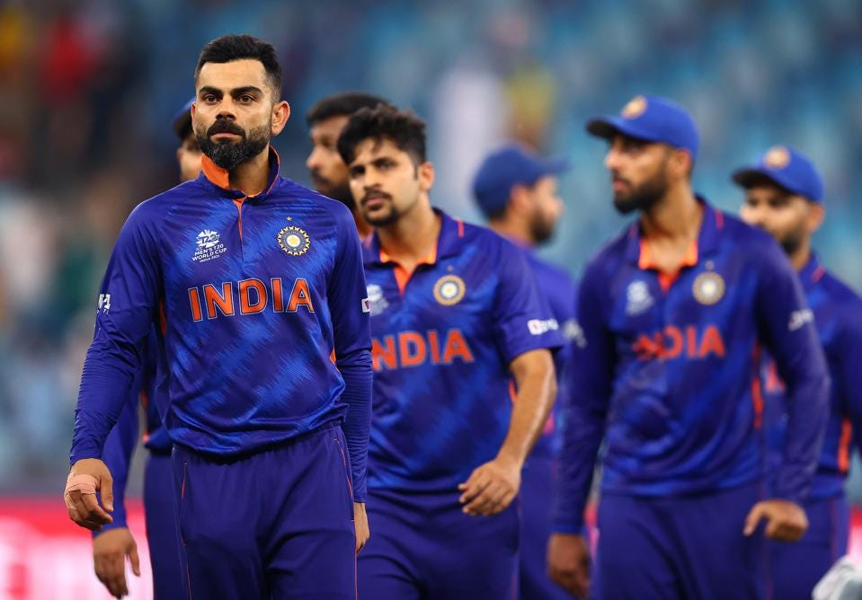

<!DOCTYPE html> 
<html lang="en"> 
    <head> 
        <meta charset="utf-8"> 
        <title>CRICKET
        </title>
        <link rel="stylesheet" href="style.css">
        <link href="https://fonts.googleapis.com/css?family=Cinzel+Decorative&display=swap" rel="stylesheet">
        <link href="https://fonts.googleapis.com/css2?family=Rock+3D&display=swap" rel="stylesheet">
    </head>
</html>
<body>
    <ul class="menu" >
        <li class="links" > Home
        </li>
        <li class="links" > Highlites
        </li>
        <li class="links"  > Players
        </li>
        <li class="links"  > Worldcup
        </li>
    </ul>
    
<section id="welcome">
    <div class="parallax-inner">
    
        <h1>I love cricket <br>
            <span id="name">this is my favourate game i like it as when i play it there is no one who can out me so it is easy for me to play </span>
        </h1>
        <h2> cricket cricket cricket </h2>
    </div>
    </section>
<section id="bio">
    <h1>Hi!</h1> 
    <div class="line">
    </div> 
    <p>My favorite game is cricket.
Cricket is a sport played with a bat and a ball.
This game is played between two-player groups.
This game is played with 11 players on each side of the two teams.
The person who hits the ball is called the “Batsman,” a person who bowls is called a “Bowler.”
        Cricket is one of the most popular games in the world that was originated in England.
    </section>
    <section id="videos">
    <h1> cricket hilight</h1>
    <div class="line">
    </div> 
   <iframe width="640" height="360" src="https://www.youtube.com/embed/_Sme0VtROsg" title="YouTube video player" frameborder="0" allow="accelerometer; autoplay; clipboard-write; encrypted-media; gyroscope; picture-in-picture" allowfullscreen></iframe>
    </section>
    
    <br><br>
    
    <section id="work">
    <h1>players</h1>
    <div class="line">
    </div> 
        <iframe width="640" height="360" src="https://en.wikipedia.org/wiki/MS_Dhoni" title="YouTube video player" frameborder="0" ></iframe>
    </section>
    
    <br><br><br><br><br><br>
    
    <section id="writings">
        <h1> worldcup</h1>
         <div class="line">
    </div>
       <a href="https://stats.espncricinfo.com/ci/engine/records/team/series_results.html?id=12;type=trophy">my favourite cricketer ms dhoni</a>
    </section>
    
</body>

